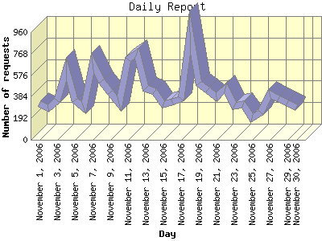

Report generated by Analog 6.0 and Report Magic 2.21
|
Web Server Statistics for "Harish Narayanan (hnarayan) - November 2006" Report generated by Analog 6.0 and Report Magic 2.21 |
The Daily Report identifies the activity for each day within the reporting period. Remember that one page hit can result in several server requests as the images for each page are loaded.

| Day | Number of requests | Number of bytes transferred | Percentage of the bytes | Percentage of the requests | |
|---|---|---|---|---|---|
| 1. | November 1, 2006 | 323 | 12.450 MB | 1.61% | 2.53% |
| 2. | November 2, 2006 | 282 | 13.373 MB | 1.73% | 2.21% |
| 3. | November 3, 2006 | 352 | 17.957 MB | 2.32% | 2.76% |
| 4. | November 4, 2006 | 629 | 17.312 MB | 2.23% | 4.93% |
| 5. | November 5, 2006 | 352 | 23.407 MB | 3.02% | 2.76% |
| 6. | November 6, 2006 | 283 | 12.863 MB | 1.66% | 2.22% |
| 7. | November 7, 2006 | 683 | 23.785 MB | 3.07% | 5.36% |
| 8. | November 8, 2006 | 525 | 30.165 MB | 3.89% | 4.12% |
| 9. | November 9, 2006 | 421 | 14.567 MB | 1.88% | 3.30% |
| 10. | November 10, 2006 | 320 | 14.566 MB | 1.88% | 2.51% |
| 11. | November 11, 2006 | 715 | 17.948 MB | 2.32% | 5.61% |
| 12. | November 12, 2006 | 775 | 86.947 MB | 11.22% | 6.08% |
| 13. | November 13, 2006 | 459 | 35.608 MB | 4.60% | 3.60% |
| 14. | November 14, 2006 | 432 | 34.696 MB | 4.48% | 3.39% |
| 15. | November 15, 2006 | 317 | 26.357 MB | 3.40% | 2.48% |
| 16. | November 16, 2006 | 340 | 21.245 MB | 2.74% | 2.67% |
| 17. | November 17, 2006 | 362 | 31.572 MB | 4.08% | 2.84% |
| 18. | November 18, 2006 | 959 | 37.049 MB | 4.78% | 7.52% |
| 19. | November 19, 2006 | 502 | 28.373 MB | 3.66% | 3.94% |
| 20. | November 20, 2006 | 446 | 38.312 MB | 4.95% | 3.50% |
| 21. | November 21, 2006 | 382 | 20.677 MB | 2.67% | 3.00% |
| 22. | November 22, 2006 | 456 | 18.336 MB | 2.37% | 3.58% |
| 23. | November 23, 2006 | 300 | 12.773 MB | 1.65% | 2.35% |
| 24. | November 24, 2006 | 313 | 16.305 MB | 2.10% | 2.45% |
| 25. | November 25, 2006 | 195 | 18.566 MB | 2.40% | 1.53% |
| 26. | November 26, 2006 | 243 | 14.143 MB | 1.83% | 1.91% |
| 27. | November 27, 2006 | 405 | 53.078 MB | 6.85% | 3.17% |
| 28. | November 28, 2006 | 365 | 17.118 MB | 2.21% | 2.86% |
| 29. | November 29, 2006 | 333 | 32.179 MB | 4.15% | 2.61% |
| 30. | November 30, 2006 | 286 | 32.996 MB | 4.26% | 2.24% |
Most active day November 11, 2006 : 593 pages sent. 959 requests handled. 38,848,985.00 served.
Daily average: 425 requests handled. 25.824 MB served.
This report was generated on January 4, 2007 13:06.
Report time frame November 1, 2006 00:01 to November 30, 2006 23:50.
| Web statistics report produced by: | |
 Analog 6.0 Analog 6.0 |  Report Magic 2.21 Report Magic 2.21 |